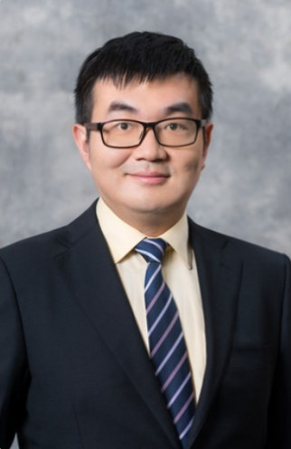
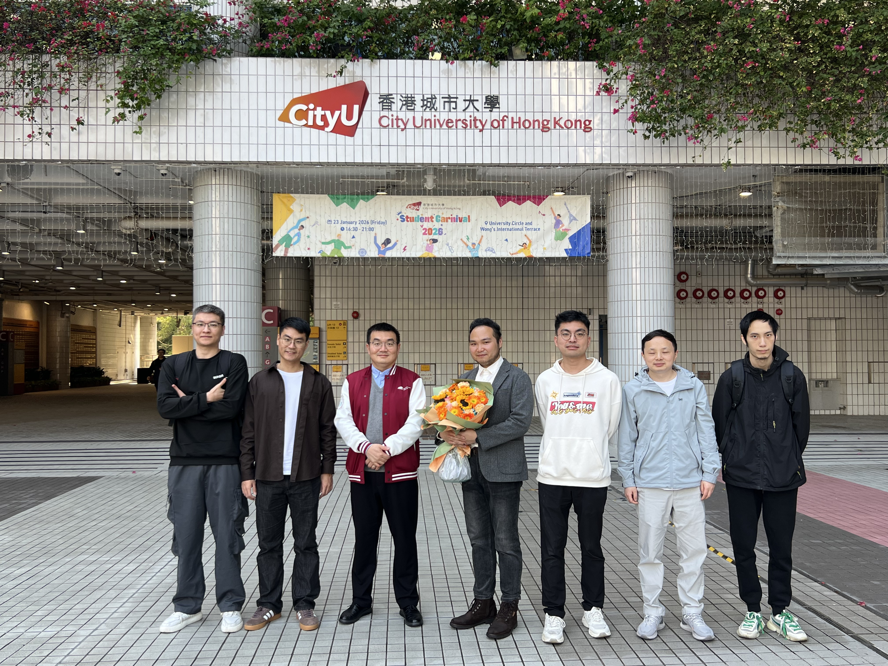

Department of Physics, City University of Hong Kong

Associate Professor (tenured)
Prof. Zhedong Zhang received his B.Sc. from Shenzhen University in 2009 and Ph.D. degree in physics from the State University of New York at Stony Brook in 2016. During 2016-2017, he worked as postdoctoral researcher in the Department of Chemistry at University of California Irvine. From 2017 to 2020, he was a Robert A. Welch Postdoctoral Fellow in the Institute for Quantum Science and Engineering at Texas A&M University. He joined the Department of Physics at City University of Hong Kong in 2020 as an Assistant Professor, and was promoted to Associate Professor (tenured) in 2025. Prof. Zhang received the Excellent Young Scientists Award by the NSFC in 2024 (國家優秀青年科學基金).
Contact:
Email: zzhan26@cityu.edu.hk
Phone: +852 34424967
Office: YEUNG-G5125

Associate Professor
Group Leader
PhD Student
PhD Student
PhD Student
PhD Student
Postdoctoral Fellow
Postdoctoral Fellow
Accepting PhD Students
Several positions are available for postdoctoral scholars and graduate students. If you are interested in joining our research group, please contact Prof. Zhang with your CV and research interests.
Prof. Zhang is willing to speak to media.
Prof. Zhang’s research mainly focuses on two fields:
Specific interests include:
The group develops theory and approaches for molecular excited-state dynamics and radiative processes (in conjunction with time- and spatial-domain nonlinear spectroscopy, e.g., using attosecond lasers and quantum states of light), as well as nonequilibrium thermodynamics of mesoscopic systems, bridging microscopic to larger scales.
Selected recent publications (most recent first):
For a full list, visit: Google Scholar | CityU Scholars Profile